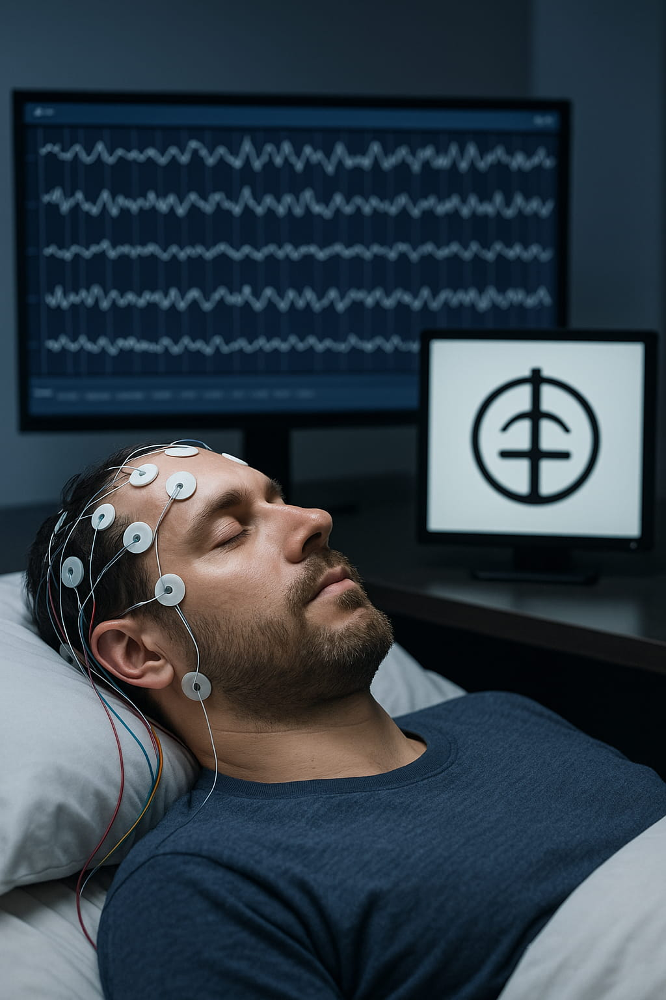

Affective Cymatics: Constructing a Symbolic System of Intuitive Resonance
Abstract
This paper theorizes a constructed symbolic system - Affective Cymatics - designed to operate as an "experiential bridge," a cognitive-phenomenological domain that retains structural and affective coherence across waking and dreaming states. Traditional languages, reliant on propositional syntax, often fragment under the neurophysiological conditions of REM sleep, which are associated with a notable modulation of prefrontal cortex activity. Drawing on principles from dream science, music cognition, and human-computer interaction, we first establish a formal framework for what constitutes an experiential bridge, using music as the paradigmatic case. We argue that resilience to dream-logic breakdown depends on three criteria: (1) reliance on automatized sensorimotor schemata, (2) robust subcortical–limbic integration, and (3) minimal dependence on executive functions governed by the dorsolateral prefrontal cortex (DLPFC). We then propose a design methodology and formal axioms for Affective Cymatics, a system of 24 glyphs whose syntax is based on aesthetic and energetic coherence rather than grammatical rules. The system is intentionally constructed to satisfy the criteria for an experiential bridge. We conclude by proposing that the system's validity can be tested through its capacity to maintain experiential integrity in dreams, offering a novel, non-semantic "litmus test" for a language of intuitive resonance.
1. Introduction: The Limits of Language and the Coherence of Dreams
Language, in its conventional form, serves as a vehicle for encoding and transmitting propositional information. Yet, other forms of expression - such as music and ritual - communicate not by stating, but by evoking a “felt sense” that precedes verbal articulation (Gendlin, 2003). This pre-verbal, embodied mode of knowing represents a foundational dimension of cognition, as emphasized in Merleau-Ponty’s (1962) phenomenology.
During Rapid Eye Movement (REM) sleep, the brain undergoes a significant shift in activity. Notably, the dorsolateral prefrontal cortex (DLPFC), a region crucial for executive functions like linear reasoning, working memory, and syntactic sequencing, exhibits reduced activity. Conversely, limbic and sensorimotor systems remain highly active (Braun et al., 1997; Muzur, Pace-Schott, & Hobson, 2002). This neural shift is considered a key contributor to the phenomenon of "dream logic," where propositional language, text, and logical sequences often fragment into incoherence.
However, not all experiences disintegrate. Dream reports frequently describe music that retains its structural and emotional integrity, suggesting the existence of what we term experiential bridges: domains of cognition that are resilient to dream-logic breakdown because they do not rely heavily on the executive faculties suppressed during REM sleep.
This paper proposes a theoretical framework in two parts. First, we formally define the concept of an experiential bridge, using music as the primary, scientifically-grounded case study. Second, we introduce Affective Cymatics, a constructed symbolic system designed specifically to function as such a bridge. It is a structured system for evoking embodied experience, rather than describing it. Its meaning emerges from a holistic, intuitive resonance. This positions the system as a framework for structured phenomenological exploration, with universality as a testable, aspirational goal.
Universe 00110000
2. Defining Experiential Bridges: A Framework for Dream-Logic Resilience
To move from anecdotal observation to a testable theory, we propose that a cognitive domain functions as an experiential bridge if it satisfies three necessary criteria, derived from the known neurophysiology of REM sleep.
- Procedural/Sensorimotor Reliance: The experience must be grounded in deeply automatized, embodied schemas. These processes are supported by cerebellar, basal ganglia, and brain-stem systems that remain active and are crucial for procedural memory consolidation during sleep (Stickgold, 2005).
- Subcortical–Limbic Integration: The experience must directly engage affective and motivational circuits, such as the amygdala and ventral striatum. These regions provide a powerful source of emotional coherence that is independent of narrative or logical reasoning (Blood & Zatorre, 2001).
- Minimal DLPFC Dependency: The structure of the experience must not be contingent on the online executive sequencing, working memory, or rule-based propositional syntax associated with the DLPFC (Peretz & Zatorre, 2005).
Music serves as the paradigmatic example, robustly satisfying all three criteria. Its rhythm is procedural, its melody is affective, and its harmonic structure is not linguistic. We posit that these underlying principles - procedural embodiment, limbic resonance, and independence from higher-order syntax - are modality-agnostic. To illustrate this, we can theorize the existence of a purely tactile experiential bridge. Imagine a structured system - an 'Art of Touch' - that uses composed haptic sensations ('touch notes' and 'touch scales') instead of musical ones. Such a system, based on precise, repeatable tactile patterns, would inherently satisfy the criteria: its foundation would be purely sensorimotor (Criterion 1), its emotional impact would be direct and limbic (Criterion 2), and its 'grammar' would be based on felt patterns of texture, rhythm, and pressure, not propositional syntax (Criterion 3). The central hypothesis of this work is that these same principles can be transposed to a visual-kinesthetic system, a necessary leap for constructing a symbolic system like Affective Cymatics.
3. A Proposed Methodology for Constructing an Experiential Bridge
The conceptual construction of Affective Cymatics would follow a three-phase, human-AI collaborative methodology. This framework is explicitly designed to embed the three criteria for an experiential bridge into the system's core structure. It integrates computational analysis to ground the system in cross-cultural patterns of meaning while preserving the central role of human intuition in the final design.
- Phase 1: Knowledge Graph Construction and Concept Distillation (Limbic Integration). To anchor the system in deep affective patterns (Criterion 2), the proposed process would begin with the construction of a massive symbolic knowledge graph. A transformer-based language and vision model would be trained on a curated, multimodal corpus spanning world mythology, esoteric traditions (e.g., alchemy, tarot), poetry, contemplative literature, and symbolic art. The AI's task would not be to merely find keywords, but to perform a deep semantic analysis, mapping the complex relationships, co-occurrences, and conceptual adjacencies between symbolic themes across cultures and modalities. This process directly mirrors the methodology outlined in the Intuitive Symbolics paradigm, which also proposes an AI that analyzes patterns from "global art, mythology, and science" to build a knowledge graph of symbolic associations. It is crucial to acknowledge the assumption that these patterns in symbolic articulation serve as a robust proxy for universal, pre-verbal experiential states. From this data-driven map of symbolic connections, researchers would then distill a finite set of foundational concepts - such as the proposed 24 - that represent the most recurrent and resonant nodes in the network of human expression.
- Phase 2: AI-Assisted Glyph Synthesis (Sensorimotor Reliance). This phase would ground the system in embodied perception (Criterion 1) by translating the distilled concepts into visual forms. For each of the 24 conceptual nodes, a generative AI would synthesize a library of abstract glyphs, guided by the patterns in the knowledge graph. This process is again exemplified by the Intuitive Symbolics approach, where the AI synthesizes a library of evocative forms for the user. Human designers would then act as curators in an iterative loop. They would select the most promising AI-generated forms and refine them, using "felt-sense resonance" as the primary validation criterion. In this collaborative model, the AI serves as a divergent engine, exploring the vast morphological space constrained by the knowledge graph, while the human designer provides the crucial convergent validation through phenomenological testing. A successful glyph would be one that, when viewed or kinesthetically traced, directly and consistently evokes the inner quality of its corresponding theme among test users. This process, documented through user ratings and think-aloud protocols, would aim to systematize the intuitive selection process to produce a lexicon optimized for sub-symbolic, sensorimotor engagement.
- Phase 3: Syntactic Refinement and System Codification (Minimal DLPFC Dependency). To create a syntax free from propositional logic (Criterion 3), the final phase would develop compositional principles based on holistic, aesthetic coherence. This "ontological grammar" would be codified by arranging the final glyph set into sequences and analyzing their emergent properties through practitioner feedback. This iterative process would establish repeatable principles based on visual weight, energetic flow, proximity, and juxtaposition. For instance, the system might codify rules of tension and resolution, similar to music theory. The meaning of a sequence would emerge from the holistic Gestalt of the phrase rather than a linear decoding of its parts - a principle also at work in how the AI partner in the Intuitive Symbolics system interprets a sequence of symbols - thus ensuring the system's structure relies on intuitive, relational perception rather than the executive functions of the DLPFC.
Universe 00110000
4. Mechanism of Resonance: The Psychophysiological Foundations of Affective Cymatics
The system of Affective Cymatics is named for its core mechanism: the process by which external symbolic patterns generate tangible, psychophysiological signatures of coherence in a human observer. The most potent and measurable of these signatures is the phenomenon of frisson, or goosebumps. The system is designed such that the intuitive and strategic ordering of its resonant symbols can achieve the same effect often produced by music. This response is not merely a side effect of emotional arousal but is understood as a direct, physical manifestation of the "click" of coherence.
This function mirrors the physical principle of cymatics - the study of how vibrational frequencies create visible, geometric patterns in a physical medium, such as sand on a Chladni plate. An incoherent or chaotic frequency produces disorganized movement, but a pure, resonant frequency compels the particles to "snap" into a stable, intricate, and ordered form. Frisson functions as a biological parallel: it is the process by which the invisible "informational frequency" of a perfectly coherent idea, musical phrase, or symbolic sequence compels the physical medium of the human skin to reconfigure itself into a visible, textured pattern. The intangible experience of meaning becomes a tangible, somatic event.
This analogy is structurally precise and reveals three critical aspects of this felt sense of coherence:
- Honesty: The piloerector reflex (the involuntary process that causes goosebumps), mediated by the autonomic nervous system, is not under conscious control. Generally, one cannot will oneself into a state of frisson. Like the sand on the plate which cannot "lie" about the resonant frequency, the body's response is an incorruptible signal. It is a moment of pure externalization, a truth signal broadcast from the limbic system to the skin.
- Evolutionary Exaptation: The piloerector reflex is an ancient mechanism for thermoregulation and threat display. Its co-option for responding to abstract stimuli like art is a profound example of evolutionary exaptation. It suggests that for the human organism, the perception of profound coherence is registered by the nervous system with the same primal urgency as physical survival. Meaning, in this sense, is not a luxury but a fundamental biological imperative.
- The Original Externalization: Long before neuro-sensing technologies, frisson served as the body's own method of making the internal click of coherence visible. It is the original, organic, real-time readout of a peak coherence event.
This biological signature of a peak coherence event can be formalized within the framework of Predictive Landscape Semantics (PLS). PLS defines meaning as the realized improvement in a system's predictive model, a quantity denoted as `ΔQ`. A `ΔQ` event occurs when an informational pattern allows a receiver to update their internal model (their Predictive Landscape) from a state of higher uncertainty to a new, updated state characterized by greater predictive accuracy. The magnitude of this positive change (`ΔQ` > 0) is the quantifiable measure of the meaning that was just realized.
The profound insight here is that the human organism has evolved to experience this computational improvement as a somatic reward. Frisson is the physical manifestation of a successful update cycle. It is the body's reinforcement signal, an intrinsic pleasure that accompanies the successful compression of one's model of reality, effectively solving a component of the Prediction Optimization Problem (POP), the fundamental challenge for systems to generate accurate predictions with limited resources.
Much like an athlete seeks the satisfaction of a perfected movement, the mind is incentivized to seek `ΔQ`-rich stimuli. Engaging with resonant music, art, or ideas - and as we propose, the system of Affective Cymatics - is not merely passive consumption; it is an active training process. Each instance of frisson reinforces the neural pathways that led to that moment of insight, promoting the long-term neuroplasticity required to build a more efficient and powerful predictive engine. Therefore, the Affective Cymatics system is proposed not just to represent concepts, but to be an engine for systematically generating these rewarding `ΔQ` events, making the pursuit of meaning a tangible, repeatable practice.
4.1 The Psychophysical Dynamics of a Coherence Event
To formalize the mechanism of resonance, we can build a model directly from the principles of Predictive Landscape Semantics (PLS). This model posits that the "frisson" experience is the direct physical consequence of a system finding a highly efficient solution to its ongoing Prediction Optimization Problem (POP). A Peak Coherence Event (`Φ`) is not merely a psychological phenomenon; it is a measurable, physically favorable state change driven by the universal imperative for predictive efficiency.
This model is grounded in two core principles native to the framework:
- Systems as POP Solvers: Every cognitive system is fundamentally an engine attempting to solve the POP - maximizing its predictive quality (`Q`) while minimizing the expenditure of finite physical resources, quantified as Signal Cost (`SC`).
- Meaning as a Physical Process: Following PLS, meaning (`ΔQ`) is the quantifiable improvement in predictive quality resulting from processing an informational pattern (`s`). This processing is a physical act that incurs a Signal Cost (`SC`).
The system is therefore driven by the Principle of Compression Efficiency (PCE), which states that systems evolve to optimize the trade-off between a signal's expected benefit, its Meaning Potential (MP), and its comprehensive Signal Cost (SC). The efficiency of a signal can be thought of as its Compression Efficiency (CE), where `CE ≈ MP/SC`.
4.2 The Physical Signatures of a High-CE Event
The process of receiving a highly meaningful signal unfolds in three distinct stages, described purely in the language of PLS.
- Pre-Coherence (An Inefficient State): The system operates with a sub-optimal predictive model (`L_t`). This state is characterized by low predictive quality (`Q`) and a high ongoing Predictive Processing Cost. It is spending significant energy for low predictive return - a state of poor POP-solving efficiency.
- The Coherence Event (A High-CE Update): The system receives a resonant pattern - such
as
a glyph sequence from Affective Cymatics - that possesses high Compression Efficiency. This
signal allows the system to update its model (`L_t` → `L_t+1`) in a way that produces a large
Predictive Improvement (`ΔQ`) for a very low Signal Cost (`SC`). This update process involves
two simultaneous physical changes:
- Uncertainty Collapse: The large `ΔQ` signifies that the system has eliminated a vast number of incorrect or less-likely hypotheses. This "collapse of the possibility space" is a physical act of erasing information. Crucially, according to Landauer's Principle, the erasure of information is not free; it must be accompanied by the dissipation of a corresponding amount of heat into the environment.
- Model Simplification: The new model (`L_t+1`) is more elegant and computationally cheaper to run. It has a lower ongoing Predictive Processing Cost. The system has literally found a more energy-efficient way to model its reality.
- Post-Coherence (An Optimized State): The system settles into a new, more stable baseline. It has enhanced its POP-solving capability, now achieving higher predictive accuracy for a lower resource cost.
We can therefore state that the magnitude of the frisson experience (`Φ_magnitude`) is proportional to the net utility of the informational signal, as defined by the Principle of Compression Efficiency (PCE):
Φmagnitude ∝ MP(s) - λ ⋅ SC(s)
This model predicts two distinct and measurable physical markers for any significant `ΔQ` event:
- The "Insight Spike" (Heat Dissipation): A transient, measurable burst of heat from the cognitive hardware at the exact moment of uncertainty collapse. This is not the heat of "working hard" but the specific heat of erasing wrongness - the physical cost of achieving clarity.
- The "Efficiency Gain" (Power Reduction): A lasting decrease in the system's baseline power consumption after the event. This is the physical signature of Model Simplification, measuring the enduring benefit of the `ΔQ` event for tackling the POP.

Universe 00110000
4.3 Frisson as a Neurobiological Reward for Predictive Efficiency
The profound sensation of frisson - the "shiver" of insight - is not merely an emotional side effect. We propose it is the direct, tangible manifestation of the brain's intrinsic reward system firing in response to a successful and highly efficient solution to the Prediction Optimization Problem (POP). It is the physical feeling of the "Efficiency Gain" being realized, a somatic signal that the organism's model of reality has just become demonstrably better.
This mechanism can be understood as a direct neuro-phenomenological process:
- The High-CE Event as a Reward Trigger: A Peak Coherence Event, characterized by a high Compression Efficiency (CE), signifies a moment of massive predictive improvement for minimal cost. The brain's monitoring circuits recognize this not just as an information-processing event, but as a significant metabolic and computational victory: the system can now achieve greater predictive accuracy for a lower ongoing energy cost.
- Activation of the Intrinsic Reward System: This detection of a sudden leap in predictive efficiency triggers a release of endogenous opioids and dopamine in core reward-processing regions of the brain, such as the ventral striatum and nucleus accumbens. This is the same circuitry that reinforces behaviors essential for survival, like eating or social bonding. This aligns with findings that intensely pleasurable responses to music - a primary source of frisson - correlate with activity in these very regions.
- The Somatic Sensation of Frisson: The resulting neurochemical cascade produces a distinct, pleasurable, and physically palpable sensation that spreads across the body. The characteristic "shiver" or "wave" of frisson is the subjective experience of this rapid, system-wide reward signal. It is the body's way of making the abstract computational event of "model improvement" into a concrete, desirable feeling.
From this perspective, frisson is an evolutionarily honed mechanism to incentivize the search for high-CE signals. By making the successful compression of reality feel good, the brain reinforces the very cognitive strategies and attentional states that lead to solving the POP. It is a reward for becoming a more efficient predictive engine. The experience is not a byproduct of insight; it is the reward for it, a direct somatic echo of a high-CE event, ensuring the organism will continue to seek out patterns of high coherence and meaning.
Indeed, the very act of comprehending this model presents a point of meta-reflection. The informational pattern of this text, by integrating neuroscience, thermodynamics, and phenomenology into a single, coherent explanation, may itself constitute a high-ΔQ signal. It is therefore not inconceivable that a reader, upon grasping this synthesis, might experience a subtle but tangible instance of the very phenomenon being described. The frisson of understanding is, in this moment, the theory validating itself in real time.
4.4 A Necessary Divergence from the Free Energy Principle
Any robust theory of cognition must contend with the Free Energy Principle (FEP), a landmark framework proposed by Karl Friston (2010). However, to position Predictive Landscape Semantics (PLS) as a mere extension or analogy of the FEP would be to miss its fundamental departure. While both frameworks center on prediction, they are governed by starkly different prime directives. The FEP is driven by a conservative imperative: minimizing prediction error to maintain stability and resist dissolution. PLS, in contrast, is governed by an acquisitive imperative: to maximize predictive power within a finite resource budget. The divergence between these two principles is not a subtle distinction; it is the conceptual core of this work.
The FEP posits that any self-organizing system, to resist disorder, must minimize its variational free energy. This quantity serves as a mathematical upper bound on surprise (or prediction error). Therefore, the core imperative of an FEP-based system is to continuously minimize prediction error by updating its internal model of the world and acting upon the world to make sensory inputs conform to its predictions. In this, both frameworks agree: intelligent systems are fundamentally prediction engines.
However, Predictive Landscape Semantics (PLS) introduces a different set of functional priorities and constraints. The divergence is not merely a matter of methodology but of fundamental goals, which can be understood through key points:
- The Paradox of Perfect Prediction: A system with perfect predictive accuracy would eliminate surprise, resulting in a static and paradoxical state where the future collapses into the present. An organism without a future is, by definition, not a living, adaptive entity. The PLS framework posits that the logical endpoint of this mandate - a state of perfect predictive certainty - is both fundamentally impossible and existentially undesirable. The impossibility stems from two independent constraints: the logical barrier of the Self-Referential Paradox of Accurate Prediction (SPAP), and the practical barrier of the Prediction Optimization Problem (POP), which makes the resource cost of eliminating final uncertainties astronomical.
- Optimization within the "Space of Becoming": Because perfect prediction is both logically impossible and resource-rationally undesirable, the goal of a PLS-governed system is not surprise minimization at all costs. Instead, its goal is to optimize its performance within a viable "sweet spot" of predictive accuracy. This zone, where prediction is powerful but imperfect, is what this framework terms the Space of Becoming. It is a direct functional consequence of tackling the POP under the hard constraint of SPAP.
Therefore, the distinction is profound. The FEP describes what a system must do to maintain its organization (minimize surprise), but PLS describes how an adaptive system must operate to continue becoming (by efficiently managing, not eliminating, uncertainty). The subjective experience of frisson is the somatic reward for a particularly successful move within this optimization process - a large predictive gain (`ΔQ`) achieved for a disproportionately low cost (`SC`), reinforcing the strategies that keep the organism thriving within its dynamic, uncertain world.
5. Formal Structure of the System
The system is defined by a set of formal axioms, a core lexicon (the glyph set), and compositional principles.
5.1. Axioms and Postulates
The system is governed by five axioms that explicitly align with the criteria for an experiential bridge.
- Axiom 1 - Primacy of Embodied Perception: Meaning manifests through direct sensorimotor and affective response, not semantic decoding. A glyph or phrase is "understood" when it is felt. (Addresses Criterion 1 & 2).
- Axiom 2 - Gestalt Unity: A valid phrase must present a holistic perceptual coherence. Its components must fuse into a single experiential arc, akin to the way musical notes form a chord. (Addresses Criterion 3).
- Axiom 3 - Energetic Flow Constraint: Sequences must balance energetic tension and resolution. A phrase may not contain more than two consecutive high-intensity glyphs (classified based on their archetypal function, e.g., from the "Forces" domain) without a resolving or grounding glyph. This ensures affective coherence. (Addresses Criterion 2).1
- Axiom 4 - Contextual Plasticity: The valence of any glyph is modulated by its neighbors. There are no fixed, one-to-one definitions; meaning is relational, emergent, and holds manifold potential, like a musical motif in different harmonic contexts. (Addresses Criterion 3).
- Axiom 5 - Minimal Cognitive Load: Glyphs are constructed from simple geometric strokes to favor intuitive, sub-symbolic processing over conscious analytical interpretation. (Addresses Criterion 1 & 3).
1Here, "energetic" denotes a subjective, phenomenologically perceived quality of dynamism, affective intensity, or felt tension/release within an experiential arc. It is a psychophysical rather than a physicalist term.
5.2. The Foundational Glyph: Expressive Silence
Before enumerating the glyph set, it is essential to establish the foundational element - silence. As detailed in the theory of Expressive Silence, the intentional use of silence is not a lack of information but is itself a potent, meaning-laden signal. In music, a rest is not merely an absence of sound but a precisely timed event that creates tension, rhythm, and emotional weight. The recognition of expressive silence in music provides high confidence that it functions as a true experiential bridge, one that retains its structural and affective coherence across different states of consciousness. Its meaning is pre-verbal, relying on the intuitive recognition of presence and absence rather than the logical faculties that fragment during sleep. For this reason, it is positioned as the first and most fundamental glyph.
5.3. The Glyph Set
The system comprises 24 glyphs, divided into four conceptual domains. The domains provide a high-level organizing principle: Primordials represent foundational states of being; Forces represent dynamic processes or actions; Relations describe interactions and connections; and Manifest pertains to emergent states or conscious acts. The verbal descriptors provided in Table 1 are not strict definitions but orienting keywords - pedagogical aids that are essential for analysis and communication about the system.
| # | Domain | Name | Orienting Keyword / Inner Resonance |
|---|---|---|---|
| 1 | Primordials | Khor | Expressive silence, meaningful absence |
| 2 | Primordials | Ælan | Openness, gentle receptivity |
| 3 | Primordials | Thur | Grounding, anchoring presence |
| 4 | Primordials | Kav | Ascent, yearning, spiritual reaching |
| 5 | Primordials | Zhur | Centering, harmonic coherence |
| 6 | Primordials | Luth | Softening, release, vulnerability |
| 7 | Forces | Zur | Spark, ignition, disruption |
| 8 | Forces | Miren | Flow, yielding, surrender |
| 9 | Forces | Tovh | Buildup, intensity, charge |
| 10 | Forces | Olyn | Echo, reverberation, energetic feedback |
| 11 | Forces | Cæth | Collapse, dissolution, death |
| 12 | Forces | Rhael | Silence beyond, the void, mystery |
| 13 | Relations | Ometh | Union, merging into one |
| 14 | Relations | Sivra | Separation, individuation, distinction |
| 15 | Relations | Nair | Reflection, mirror-awareness |
| 16 | Relations | Dren | Entanglement, interference, psychic mesh |
| 17 | Relations | Vael | Balance, suspended tension, dual harmony |
| 18 | Relations | Imaer | Resonance between selves, compassion |
| 19 | Manifest | Bren | Will, conscious intention |
| 20 | Manifest | Yuneth | Offering, giving from the center |
| 21 | Manifest | Serah | Insight, visionary perception |
| 22 | Manifest | Eshun | Alignment, energetic “yes” |
| 23 | Manifest | Talor | Containment, form-holding, boundary |
| 24 | Manifest | Zairn | Completion, sealing, ritual return |
5.4. The Glyph Set Visualized
To bridge the gap between verbal description and visual experience, Figure 1 presents notional representations of three sample glyphs. These are illustrative designs intended to convey the principle of kinesthetic and visual simplicity outlined in Axiom 5, rather than serving as the definitive forms.
Universe 00110000
6. The Dream-Coherence Litmus Test: A Proposal for Validation
The central hypothesis of this paper is that because the system of Affective Cymatics was constructed to satisfy the three criteria for an experiential bridge, its symbolic phrases will be resistant to dream-logic fragmentation. A sequence like Thur – Zur – Serah should retain its affective arc in a dream - a felt sequence of transformation - even if the surrounding dream narrative is illogical.
We therefore propose the following litmus test: A symbolic system demonstrates deep, pre-verbal resonance if its sequences, when incubated or encountered in a dream, retain a recognizable affective, aesthetic, or structural integrity.
This methodological approach can be understood through a powerful analogy. Testing a system for pre-verbal resonance is like testing if a submarine's hull is truly waterproof. Describing its structural integrity on land is insufficient. To know if it works, you must subject it to the pressure of its intended environment - you must put it underwater. The dream state, with its suspended logic and fragmented semantics, is the deep ocean for cognitive structures. The Dream-Coherence Litmus Test is the act of submerging the symbolic system to see what survives the pressure. It is a non-verbal, falsifiable experiment because it lets the natural neurophysiology of the dream, not subjective linguistic description, be the final judge.
This hypothesis can be explored through several prospective research methods designed to minimize confabulation. It is important to acknowledge that these methods are subject to the inherent challenges of dream research, including the reliability of self-report, memory biases upon awakening, and the difficulty of distinguishing incubated content from spontaneous dream phenomena. With these caveats in mind, potential protocols include:
- Dream Incubation Protocols: Participants meditate on a specific glyph sequence before sleep and, upon awakening, complete structured journals designed to capture the affective and structural contours of their dreams - then analyzed for correspondences (Domhoff, 2017).
- Lucid Dream Trials: Trained lucid dreamers could be tasked with intentionally recalling or drawing a symbolic phrase during a lucid dream to observe and report on its coherence. For example, a protocol could instruct a dreamer to visualize the sequence Thur – Zur – Serah and report whether its experiential arc (grounding → disruption → insight) was preserved.
- Post-Dream Mapping: The glyph set can be used as a phenomenological tool for individuals to map or give form to the ineffable emotional arcs of their non-lucid dreams, testing the system’s descriptive validity for non-waking states.
7. Applications, Limitations, and Future Research
7.1. Potential Applications
Beyond its theoretical interest, this system holds promise for several applications:
- Contemplative and Ritual Practice: Composing or meditating upon glyph sequences to structure and deepen inner states.
- Artistic Design: A formal vocabulary for creating works that guide viewers through a structured experiential journey.
7.2. Limitations and Scope Conditions
The primary limitation of this system is the challenge of verifying its core mechanism. While designed around computationally identified cross-cultural themes - potentially tapping into what Jung termed the "collective unconscious" - the goal of universal resonance remains an ideal. The skeptical view - that the system functions not by tapping into universal archetypes but as a personalized Rorschach test, with its effects attributable to waking-life associations - is a critical consideration. A related alternative explanation is that any observed effects may arise from the act of focused contemplative practice or dream incubation itself, both of which are known to influence subjective experience independently of the specific symbolic content used. Empirically disentangling these variables would require careful experimental design, for instance, by comparing dream reports from groups incubating glyphs from Affective Cymatics against a control group incubating a set of "sham" glyphs - forms designed to be aesthetically comparable but randomly generated and devoid of archetypal grounding. If the genuine, archetype-based glyphs consistently produce stronger and more coherent cross-participant effects than the sham glyphs, it would suggest an intrinsic resonance in their design, moving beyond mere personal projection or aesthetic preference.
The central challenge, therefore, is to design experiments that can falsify these alternative explanations. The system's most immediate and verifiable function is as a structured framework for individual phenomenological exploration.
Universe 00110000
7.3. Future Research Agenda
A rigorous empirical validation of this theoretical framework is the necessary next step. A research program could proceed through sequential stages, beginning with foundational studies and progressing toward more speculative applications. An initial phase would involve cross-cultural resonance studies to test the universality of the glyphs' affective valence, alongside neurophenomenological investigations (e.g., combining neural measurements like EEG with structured first-person reports) to observe the neural correlates of "reading" glyph sequences compared to reading text. Success in these foundational studies would justify moving to the more complex sleep-lab protocols outlined in Section 6 to directly test the dream-coherence hypothesis.
Should these validation steps prove successful, the principles of Affective Cymatics could inform the development of a new generation of human-computer interfaces designed to interact with the brain's pre-verbal, simulative faculties. This long-term research trajectory envisions two complementary technologies: one generative (active) and one analytical (passive).
The concept of Cognitive Primes proposes an active intervention for cognitive enhancement, using minimal, AI-curated stimuli to "seed" complex, self-generated simulations within the user's mind. The glyphs of Affective Cymatics represent ideal forms for such primes. Because they are designed to be post-semantic and resonate directly with embodied, affective states, they are maximally efficient. A single symbolic phrase, such as Thur – Zur – Serah, delivered as a subtle prime, could guide a user through the full experiential arc of grounding-disruption-insight during creative problem-solving achieving a profound cognitive effect with minimal external input.
Complementing this generative technology is the Psyche Mirror, a conceptual platform for deep introspection that would provide a real-time visualization of a user's mental landscape by translating neural data into a comprehensible representation. The Psyche Mirror would not only allow for profound self-reflection but also serve as the validation environment for Cognitive Primes. A user could deploy a prime based on the glyphs of Affective Cymatics and observe in the mirror as their visualized psyche responds, confirming whether the desired state of "coherence" has been achieved. The mirror would provide a tangible readout of a successful `ΔQ` event, making the user's own internal shift visible.
8. Experiential Integrity as a Global Truth
The validation of this system through dream-coherence has implications that extend beyond the system itself, potentially offering an empirical probe into the fundamental structure of human consciousness. This concept can be explored by connecting it to a broader meta-theoretical framework.
The proposed "dream-coherence litmus test" is more than a validation tool - it suggests a deeper general principle about human consciousness: that certain experiential structures remain invariant across states. This idea can be framed using an analogy from the broader theoretical framework distinguishing between global logical necessities and local physical realities.
8.1 The Two Tiers of Reality: A Foundational Analogy
To understand the significance of this invariance, we can reference the distinction laid out in the framework for scientific investigation. This framework posits two tiers of truth:
- Global Truths (Logical Necessities): These are the absolute, non-negotiable requirements for any universe to support prediction, such as causality and the arrow of time. They are the logical bedrock upon which any coherent reality must be built.
- Local Truths (Physical Realities): These are the specific, contingent parameters of a particular universe. These values could differ elsewhere but must operate within the constraints of global truths.
8.2 Transposing the Framework to States of Consciousness
This two-tiered model provides a powerful analogy for consciousness. Different states - waking, dreaming, meditation - can be seen as distinct "universes" of experience. Each may have different "local physical laws" (e.g., the ability to fly in a dream), but they might all be governed by the same "global truths" of experiential structure.
- Invariant Principles of Consciousness (Global Truths): These would be fundamental principles of experiential integrity that hold true across all states for consciousness to remain coherent. The system of Affective Cymatics is designed to operate at this level. The affective arc of a sequence like Thur – Zur – Serah (grounding → disruption → insight) is a proposed invariant; its structure should remain intact regardless of the specific dream content.
- Contingent Content of Consciousness (Local Truths): This refers to the specific, variable content of any given state. In the waking state, this is governed by conventional physics. In a dream, it may include impossible architectures or talking animals.
The error in many historical approaches to consciousness may be the failure to distinguish between these two levels. The chaotic content of dreams (the local truths) has often led to the assumption that the dream state is entirely unstructured. This framework posits the opposite: even the most bizarre dream might still be constrained by invariant principles of affective logic, which Affective Cymatics seeks to articulate.
8.3 Experiential Integrity as a Probe for Invariant Principles
From this perspective, Affective Cymatics can be viewed as more than a symbolic system; it is a proposed scientific instrument. The "dream-coherence litmus test" is an experiment designed to detect these potential "background constants" of human consciousness. By demonstrating that the system's structural and affective integrity persists even when the local realities of the dream state dissolve, we would gather evidence for the existence of these invariant principles.
This re-frames the study of altered states. We are no longer merely cataloging bizarre phenomena (local truths). Instead, we could use these states as natural laboratories to identify the fundamental, unshakable structures (global truths) that might govern all forms of human subjective experience. The quest to build a dream-coherent system is, in essence, a quest to map the invariant architecture of the self.
Universe 00110000
9. Conclusion
Affective Cymatics is proposed as a formal methodology for architecting intuitive resonance. Grounded in a neuro-phenomenological framework of "experiential bridges," it offers a system of meaning engineered to maintain its structural and affective integrity across both waking and dreaming consciousness. Its formal axioms, glyph set, and compositional principles provide a functional model for constructing meaning directly from aesthetic and energetic coherence.
The introduction of the "dream-coherence litmus test" elevates this framework to testable science, offering a novel pathway to empirically validate its claims of creating pre-verbal, embodied resonance.
Ultimately, this work lays the foundation for a future where the direct experience of coherence can be structured, shared, and understood - a future where meaning moves beyond the spoken word to become deeply felt, maintaining its integrity across altered states of consciousness.
References
Blood, A. J., & Zatorre, R. J. (2001). Intensely pleasurable responses to music correlate with activity in brain regions implicated in reward and emotion. Proceedings of the National Academy of Sciences, 98(20), 11818–11823.
Braun, A. R., Balkin, T. J., Wesensten, N. J., Gwadry, F., Carson, R. E., Varga, M., & Herscovitch, P. (1997). Regional cerebral blood flow throughout the sleep–wake cycle. Brain, 120(7), 1173–1197.
Domhoff, G. W. (2017). The Emergence of Dreaming: Mind-Wandering, Embodied Simulation, and the Default Network. Oxford University Press.
Friston, K. (2010). The free-energy principle: a unified brain theory? Nature Reviews Neuroscience, 11(2), 127–138.
Gendlin, E. T. (2003). Focusing: How to Gain Direct Access to Your Body's Knowledge. Rider.
Merleau-Ponty, M. (1962). Phenomenology of Perception (C. Smith, Trans.). Routledge & Kegan Paul.
Muzur, A., Pace-Schott, E. F., & Hobson, J. A. (2002). The prefrontal cortex in sleep. Trends in Cognitive Sciences, 6(11), 475–481.
Peretz, I., & Zatorre, R. J. (2005). Brain organization for music processing. Annual Review of Psychology, 56, 89–114.
Stickgold, R. (2005). Sleep-dependent memory consolidation. Nature, 437(7063), 1272–1278.